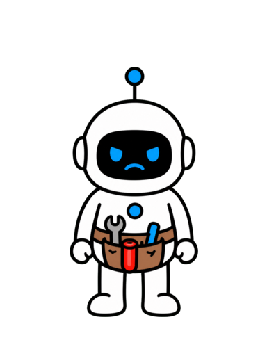

你知道怎么给 AI 智能体高信号上下文吗？


高信号？
Anthropic 如何解决 AI 智能体上下文问题

ANTHROPIC 方法 成为更擅长使用 AI 的人关注 + 收藏
成为更擅长使用 AI 的人关注 + 收藏
成为更擅长使用 AI 的人关注 + 收藏AI 智能体上下文是有限的注意力预算

ANTHROPIC 注意力预算有限
注意力预算有限
注意力预算有限给 AI 智能体一个六部分高信号包

 目标 · 规则 · 工具 · 示例 · 检索 · 状态
目标 · 规则 · 工具 · 示例 · 检索 · 状态AI 智能体看到更多，不等于信号更强

当前信号68%
AI 智能体每一步只保留四件事


目标约束证据当前状态
AI 智能体需要最小充分上下文

支持下一步行动
AI 智能体看见的是完整上下文
指令工具历史结果
窗口更大，不代表注意力免费
新增内容的收益会下降32%
规则写进去了，也可能失去优先级


过期计划会稀释重点
只保留会改变下一步判断的信息

目标约束证据状态
上下文必须随着任务持续刷新

新证据进入，旧轨迹退出
最小充分，不等于字数最少

足以支持预期行为
1. 把上下文当作注意力预算


有限资源
2. 更多 token 可能稀释重点
更多 ≠ 更强
3. 随任务持续刷新上下文
持续更新
指令要落在合适的抽象层级
不硬编码，也不空泛
结构有帮助，优先级更重要

目标边界判断原则
工具是 AI 智能体与环境的契约


名称参数错误返回
重叠工具会制造模糊决策

职责单一，结果紧凑
少量典型示例胜过边缘堆积

主要模式 + 关键边界
每段高信号都必须承担工作

结果约束工具证据
1. 指令层级要恰到好处
明确但不僵化
2. 工具清楚并减少重叠
最小可用工具集
3. 用典型示例展示模式
少量多样典型
别在开始前塞入全部文档

预算提前被花掉
上下文里先保留一张地图

路径查询标识时间戳
让 AI 智能体逐层建立理解


渐进式披露
Claude Code 只打开目标片段

搜索后再读取
按需检索也有真实成本
更慢，也可能走错方向
稳定规则预载，细节按需打开
混合策略
1. 保留轻量引用

不要预载全部正文
2. 相关时再发现细节
需要时打开
3. 平衡聚焦与检索成本
收益必须超过成本
长任务会不断填满上下文窗口
动作观察错误决定
用压缩摘要开启新窗口

决定约束证据下一步
压缩先追求高召回
宁可多带，不能漏掉关键约束
把工作状态写到窗口之外

结构化外部笔记
专门 Agent 隔离深度探索


主 Agent 保留高层计划
根据任务形态选择记忆方法
压缩笔记专门 Agent
1. 压缩长轨迹
高召回连续性摘要
2. 写入结构化笔记
持久工作状态
3. 专门 Agent 只用于深挖
价值要超过协调成本
六部分高信号上下文包
紧凑、完整、可检查第一部分：结果目标
目标使用者交付物验收
第二部分：运行规则
约束权限风险停止
第三部分：工具地图与典型示例
使用条件输入紧凑输出
第四部分：检索索引
入口用途打开条件
第五部分：工作状态
重点决定未知下一步
1. 用目标和规则锚定智能体
结果目标 + 运行规则
2. 用地图、示例和索引指导行动
工具示例检索
3. 用工作状态保持连续性
持续更新
AI 智能体忘记重点，可能因为信息太多
有限注意力被噪声争夺
第一，管理完整上下文状态
目标约束工具证据状态
第二，提高输入的信号质量
清楚指令最小工具典型示例
第三，按需检索细节
稳定信息在前，专业材料按需打开
用六部分上下文包保护长期任务
保留信号 · 按需检索 · 更新状态你知道怎么给 AI 智能体高信号上下文吗？
接下来我来告诉你，Anthropic 是怎么解决这个问题的。
视频全程干货高价值，让你成为更擅长使用 AI 的人，
内容较长，点点关注收藏不迷路。
Anthropic 把上下文看成有限的注意力预算。
窗口越满，下一步真正重要的信号越容易变弱，
判断也会偏离当前目标。
提示词越长，AI 智能体越可能追着旧细节跑。
解决办法，是六部分高信号包：目标、规则、工具、示例、
检索和状态。
看注意力预算。
原始历史塞满窗口时，目标会被挤小。
只保留当前约束和有效证据，目标重新变大。
其余信息移到窗口外，需要时再检索。
每一步只让 AI 智能体看见四件事：目标、约束、
证据和当前状态。
其他信息先留在窗口外，真正需要时再取，判断完成后再更新状态。
核心判断只有一句：
给 AI 智能体支持下一步行动的最小充分上下文，
并随着长期任务持续更新。
上下文包含模型生成下一次回复时能看到的全部 token：
系统指令、工具定义、示例、检索到的文档、消息历史、
中间结果和当前请求。
上下文工程管理的是这整个状态，不只是开头那一段提示词。
Anthropic 把上下文描述为有限资源，
而且新增内容的边际收益会下降。
有关 context rot 的研究反复看到一种现象：
材料越多，模型越可能难以准确找回藏在其中的相关信息。
窗口更大，不代表注意力免费。
这解释了为什么超长提示词仍会失败。
正确规则可能确实写进去了，但周围还有过期计划、重复说明、
原始日志和一长串边缘情况。
智能体在解决任务前，先要猜哪些内容仍然有效、
权威而且与当前步骤有关。
所以，好的上下文工程首先是筛选。
每个关键步骤开始前，都问一句：什么信息会改变下一步判断？
保留目标、必要约束、当前证据和实时状态；
能够稍后获取的参考细节，只保留索引。
筛选还要持续进行。
工具调用带来新证据，错误暴露新边界，完成里程碑后，
原始轨迹可以换成紧凑状态摘要。
第十步需要的上下文，不会和第一步完全一样。
最小不等于短。
复杂迁移仍可能需要完整验收条件、仓库约定和风险控制。
标准不是字最少，而是足以支持预期行为的最小集合。
小结。
第一，把上下文当作有限注意力预算，而不是无限存储。
第二，更多 token 可能稀释下一步最重要的指令。
第三，保留最小充分集合，并随任务变化持续刷新。
先把系统指令写在合适的抽象层级。
一端是把所有分支硬编码成脆弱的规则；
另一端只是说“把事情做好”，默认智能体知道没有明说的标准。
更有效的中间位置会明确目标、边界和判断原则，
同时给推理留下空间。
背景、指令、工具说明和输出要求可以分区组织。
格式有帮助，但真正决定效果的是内容是否清楚、优先级是否明确。
接着检查工具。
工具不只是一个动作，还是智能体与环境之间的契约。
名称、说明、参数、错误处理和返回数据都会进入上下文，
并影响智能体选择哪一个动作。
功能重叠会制造模糊决策，也会浪费注意力。
如果人都说不清两个工具分别什么时候使用，
就不能期待智能体稳定判断。
保留最小可用工具集，让每个工具职责单一、输入明确、结果紧凑。
然后筛选示例。
堆满边缘情况看起来很全面，却容易把规律埋掉。
Anthropic 更推荐少量、多样、典型的例子，
让智能体看见预期模式、必要变化和一条重要边界。
高信号不是固定字数。
它指一段信息有明确工作：确定结果、约束行为、选择工具、
展示模式、提供证据或暴露停止条件。
只有完全不承担这些工作时，才应该删除。
小结。
第一，系统指令要落在硬编码和空泛之间的合适层级。
第二，工具要清楚、高效，并尽量减少功能重叠。
第三，用少量典型示例教会智能体真正的模式。
不少系统会在智能体开始前，
把所有可能相关的文档全部塞进上下文。
材料少而稳定时，这样做很快；
但智能体还不知道哪一段真正重要，注意力预算已经提前花掉了。
按需检索只保留轻量引用，比如文件路径、已保存查询、网页链接、
对象标识、目录名和时间戳。
上下文里保留地图，到了某个判断确实需要证据时，
再打开对应内容。
这会形成渐进式披露。
文件名提示用途，目录结构说明关系，文件大小暗示复杂度，
一次搜索结果帮助缩小下一次查询。
智能体逐层建立理解，同时只把正在使用的子集放进工作上下文。
Claude Code 就体现了这种方法。
稳定的项目指令可以预先加载，文件搜索、grep、
head 和 tail 负责查看大仓库里的目标片段，
不必一次读取所有文件正文。
取舍同样真实。
运行时探索比预加载更慢，
导航不佳还会让智能体在错误方向上浪费 token。
它需要合适的搜索工具、能说明用途的命名，
以及知道什么时候停止探索的规则。
因此更实用的是混合策略。
预先放入稳定规则、当前目标和几乎每一步都会用到的少量事实；
变化快、细节多或很少使用的材料放到检索入口后面。
边界要根据任务和漏掉信息的代价来定。
小结。
第一，保留轻量引用，不要预先塞入全部正文。
第二，让 AI 智能体在细节真正相关时再逐步发现。
第三，在更聚焦的上下文和额外检索成本之间做取舍。
长任务还会带来第二个问题。
即使上下文一直被认真筛选，智能体执行动作、观察结果、
修复错误和累积决定后，窗口仍会填满。
连续工作几小时，可能多次超过可用范围。
第一种方法是压缩。
把对话或轨迹总结后开启新窗口，只带上保持连续性所需的决定、
未解决问题、约束、证据和下一步动作。
已经完成使命的原始工具输出通常可以退出。
压缩存在风险：今天看起来次要的细节，可能后来才显出关键价值。
Anthropic 建议先追求高召回，再逐步提高精确度。
多带一点内容，通常比丢掉决定性约束更安全。
第二种方法是结构化笔记。
智能体把进度、里程碑、发现和开放问题写到窗口之外，
需要时再取回相关部分。
这样能保留持久工作状态，又不用让整段对话一直在线。
专门的 Agent 可以隔离深度探索。
主 Agent 保留高层计划，
多个专门 Agent 分别研究独立问题，
再把压缩后的发现交回。
只有并行深挖的价值超过协调成本时，这种方式才值得。
选择要看任务形态：持续对话用压缩，
有清晰里程碑的迭代工作用笔记，
独立而复杂的研究用专门 Agent。
无论采用哪种方式，交接都必须保留目标、决定、证据、
未知项和下一步动作。
小结。
第一，把长轨迹压缩成高召回的连续性摘要。
第二，把持久工作状态写进结构化外部笔记。
第三，只有聚焦探索值得协调成本时，才使用专门 Agent。
把前面的方法整理成一份最小高信号上下文包。
它有六部分：结果目标、运行规则、工具地图、典型示例、
检索索引和工作状态。
它足够紧凑，可以人工检查；
也足够完整，可以支持真实工作。
第一部分是结果目标。
写清目标、使用者、交付物、验收条件，以及结果要支持的决定。
这样可以避免智能体做出很流畅、很好看，
却没有解决真实问题的产物。
第二部分是运行规则。
记录硬约束、权限、风险边界、升级节点和停止条件。
把长期规则与临时假设分开，
避免一次性的绕行方案悄悄变成永久政策。
第三部分是工具地图和典型示例。
每个工具写明使用条件、输入、紧凑输出，
以及它不能替代的相邻工具；
再加入两三个例子，展示主要模式和一条关键边界。
第四部分是检索索引。
给每份来源保存轻量入口、用途标签和打开条件。
智能体不仅要知道证据在哪里，也要知道什么时候必须取回证据。
第五部分是工作状态。
记录已完成事项、当前重点、关键决定与证据、未决问题、
失败方法和下一步动作。
到达里程碑就更新状态，再压缩或归档它替代的原始轨迹。
小结。
第一，用结果目标和运行规则锚定 AI 智能体。
第二，用工具地图、典型示例和检索索引指导行动。
第三，用紧凑且持续更新的工作状态保持连续性。
AI 智能体忘记重点，不只因为缺信息，
也可能因为没有区分的信息太多，共同争夺有限注意力。
第一，管理完整上下文状态，不只优化提示词。
根据下一步判断需要什么，保留目标、约束、工具、
证据和当前状态。
第二，提高信号质量。
用合适层级的指令、最小工具集和少量典型示例，
替代脆弱规则与边缘情况堆积。
第三，按需检索细节。
稳定且高频的信息放在前面，
变化快或专业性强的材料通过明确引用逐步打开。
最后，用压缩、
结构化笔记和六部分最小高信号上下文包保护长任务。
保留信号，按需取细节，持续维护工作状态。
关注 Tiny Agent，成为更擅长使用 AI 的人！


关注 Tiny Agent
成为更擅长使用 AI 的人！